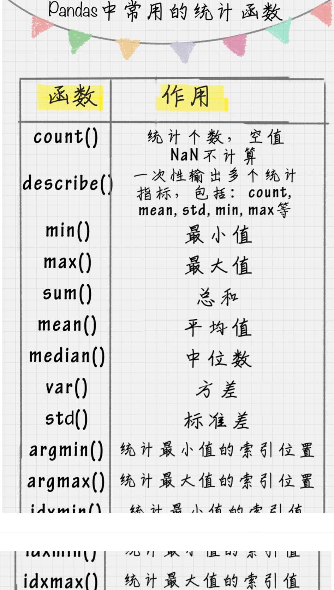

05-Python科学计算:Pandas
Pandas 可以说是基于NumPy 构建的含有跟高级的数据结构和分析能力的工具包。
数据结构： Series 和 DataFrame
Series 是个定长的字典序列。存储的时候相当于两个 ndarray
Series 有两个基本属性 index 和 values 。index 默认是 0, 1, 2..
import pandas as pd
from pandas import Series, DataFrame
x1 = Series([1,2,3,4])
x2 = Series(data=[1,2,3,4], index=['a', 'b', 'c', 'd']) # 指定index
x1
x2
采用字典方式创建Series
d = {'a': 1, 'b': 2, 'c':3, 'd': 4}
x3 = Series(d)
x3
DataFrame 类型数据结构类似数据库表
它包括了行索引和列索引， 可以将DataFrame 看成是由相同索引的 Series 组成的字典类型.
import pandas as pd
from pandas import Series, DataFrame
data= {
'Chinese': [66, 95, 93, 90, 80],
'English': [65, 85, 92, 88, 90],
'Math': [30, 98, 96,77,90]
}
df1 = DataFrame(data)
df2 = DataFrame(data, index=['ZhangFei', 'GuanYu', 'ZhaoYun','HuangZhong', 'DianWei'])
print(df1)
print(df2)
数据导入和输出
import pandas as pd
from pandas import Series, DataFrame
#可能依赖 xlrd openpyxl
score = DataFrame(pd.read_excel('data.xlsx'))
score.to_excel('data1.xlsx')
print(score)
数据清洗
import pandas as pd
from pandas import Series, DataFrame
data= {
'Chinese': [66, 95, 93, 90, 80],
'English': [65, 85, 92, 88, 90],
'Math': [30, 98, 96,77,90]
}
df2 = DataFrame(data, index=['ZhangFei', 'GuanYu', 'ZhaoYun','HuangZhong', 'DianWei'])
print(df2)
删除DataFrame中的不必要的行或列
df2 = df2.drop(columns==['Chinese']) # 列 df2 = df2.drop(index=['ZhangFei']) # 行重命名列名
df.rename(columns={ 'Chinese': 'YuWen', 'English': 'Yingyu' }, inplace=True)
去除重复的值
df = df.drop_duplicates()# 去除重复行格式问题
```python
更改数据格式
df2['Chinese'].astype('str') df2['Chinese'].astype(np.int64)
数据间空格
df2['Chinese']=df2['Chinese'].map(str.strip) # 左右两边 df2['Chinese']=df2['Chinese'].map(str.lstrip) # 删除左边 df2['Chinese']=df2['Chinese'].map(str.rstrip) # 删除右边
特殊字符
df2['Chinese']=df2['Chinese'].str.strip('$') # 删除特殊字符
大小写转换
df2.columns = df2.columns.str.upper() df2.columns = df2.columns.str.lower() df2.columns = df2.columns.str.title() # 首字母
查找空值
df.isnull()
df.isnull().any()
### 使用apply 函数对数据进行清洗
apply 函数是 Pandas 中自由度非常高的函数
比如对所有列的数值进行大些转化可以用
```python
df['name'] = df['name'].apply(str.upper)
# 自定义函数
def double_df(x):
return 2*x
df1[u'语文'] = df1[u'语文'].apply(double_df)
# 复杂函数
def plus(df, n, m):
df['new1'] = (df[u'语文'] + df[u'英语'])*m
return df
df1 = df1.apply(plus, axis=1, args(2,3,))
# axis 按列为轴操作，args 为传递的参数
数据统计
遇到NaN 值会自动排除

describe() 函数
数据表合并
df1 = DataFrame({
'name': ['ZhangFei', 'GuanYu', 'a', 'b', 'c'],
'data1': range(5)
})
df1 = DataFrame({
'name': ['ZhangFei', 'GuanYu', 'A', 'B', 'C'],
'data1': range(5)
})
# 1. 基于指定列进行连接
df3 = pd.merge(df1, df2, on='name')
# 2. inner 内链接
df3 = pd.merge(df1, df2, how='inner')
# 3. left 左链接
df3 = pd.merge(df1, df2, how='left')
# 4. right 右链接
df3 = pd.merge(df1, df2, how='right')
# 4. outer 外链接 相当于并集
df3 = pd.merge(df1, df2, how='outer')
如何用 SQL 方式打开 Pandas
工具 : pandasql
主要函数 sqldf
接受两个参数, 一个SQL查询语句，还有一组环境变量 globals() 和 locals()。直接对 DataFrame 进行操作
import pandas as pd
from pandas import DataFrame
from pandasql import sqldf, load_meat, loade_births
df1 = DataFrame({
'name': ['ZhangFei', 'GuanYu', 'a', 'b', 'c']
'data1': range(5)
})
pysqldf = lambda sql : sqldf(sql,globals())
# globals() 输入全局参数
sql = "select * from df1 where name='ZhangFei'"
print(ypsqldf(sql))

import numpy as np
import pandas as pd
from pandas import Series, DataFrame
data= {
'Chinese': [66, 95, 93, 90, 80, 80],
'English': [65, 85, 92, 88, 90, 90],
'Math': [None, 98, 96,77,90,90],
'total': [0,0,0,0,0,0]
}
df2 = DataFrame(data, index=['ZhangFei', 'GuanYu', 'ZhaoYun','HuangZhong', 'DianWei', 'DianWei'])
print(df2)
# 去除重复行
df2 = df2.drop_duplicates()
df2
df2.isnull().any()
# fillna 填充nan值
df2['Math'] = df2['Math'].fillna(df2['Math'].mean()) # 填充平均值
df2
df2.describe()
# 方法一
df2['total']=df2['Chinese'] + df2['English'] + df2['Math']
df2
# 方法二
def sum(df):
df['total2']=df['Chinese'] + df['English'] + df['Math']
return df
df2 = df2.apply(sum, axis=1)
df2